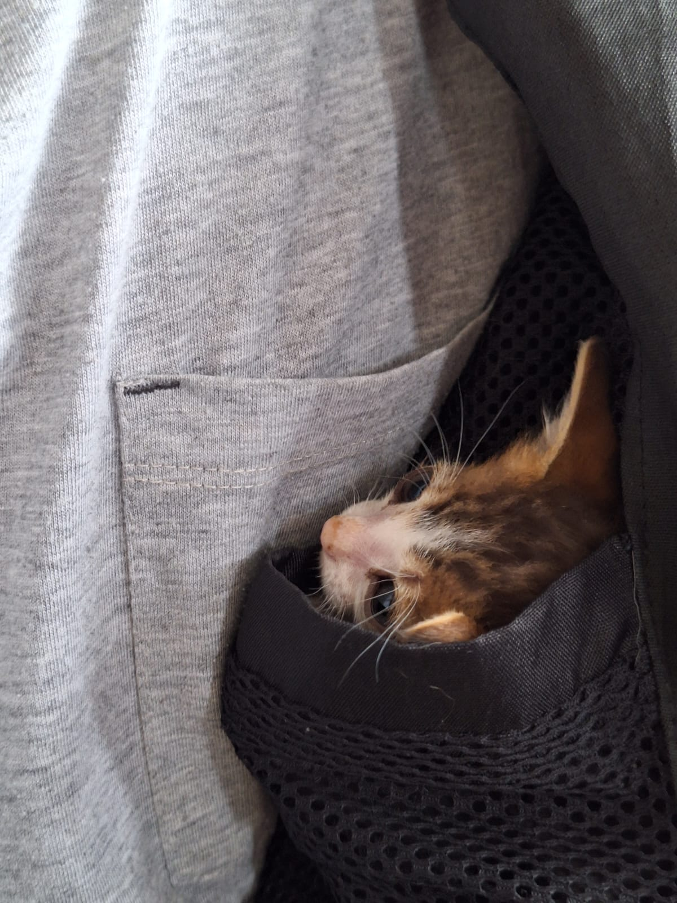
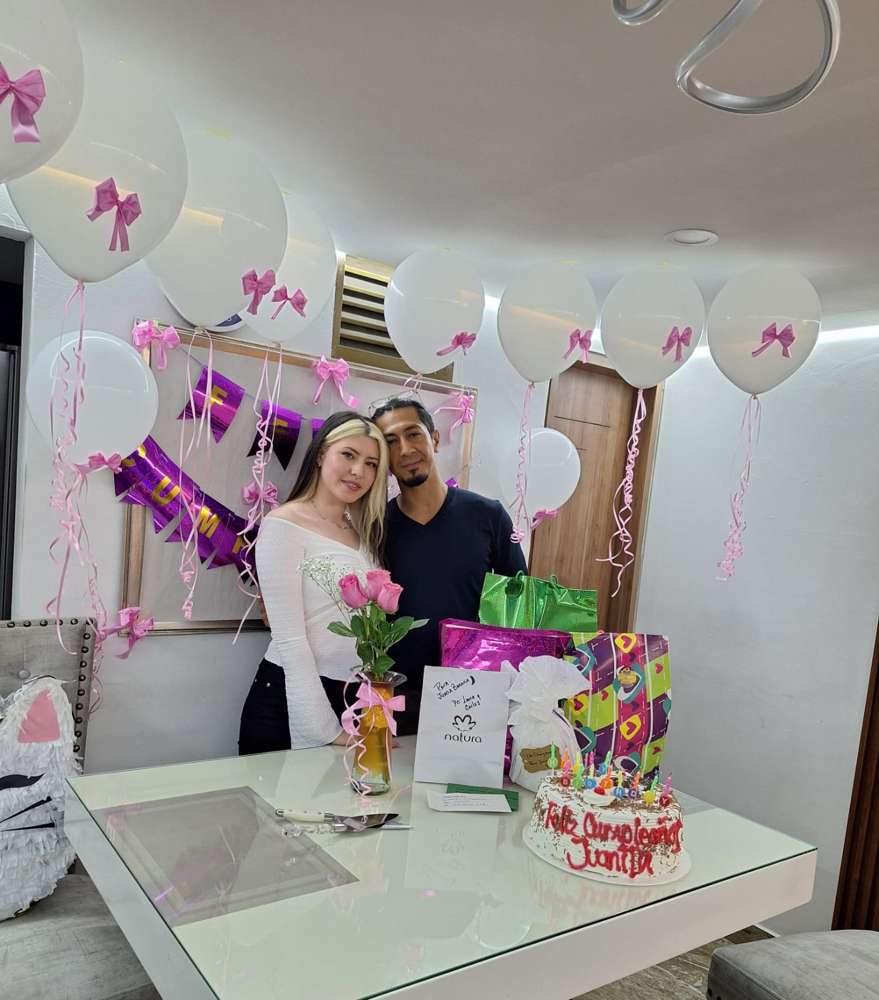
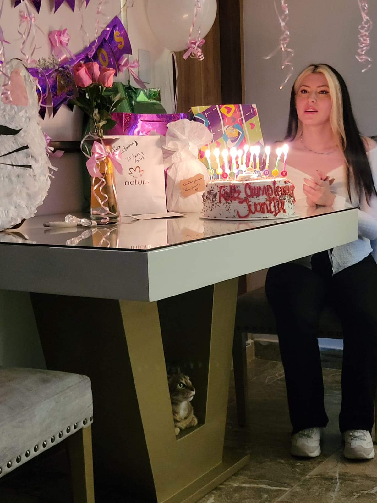
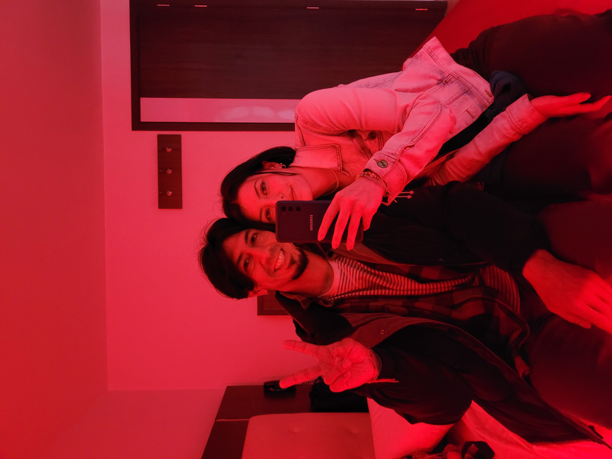
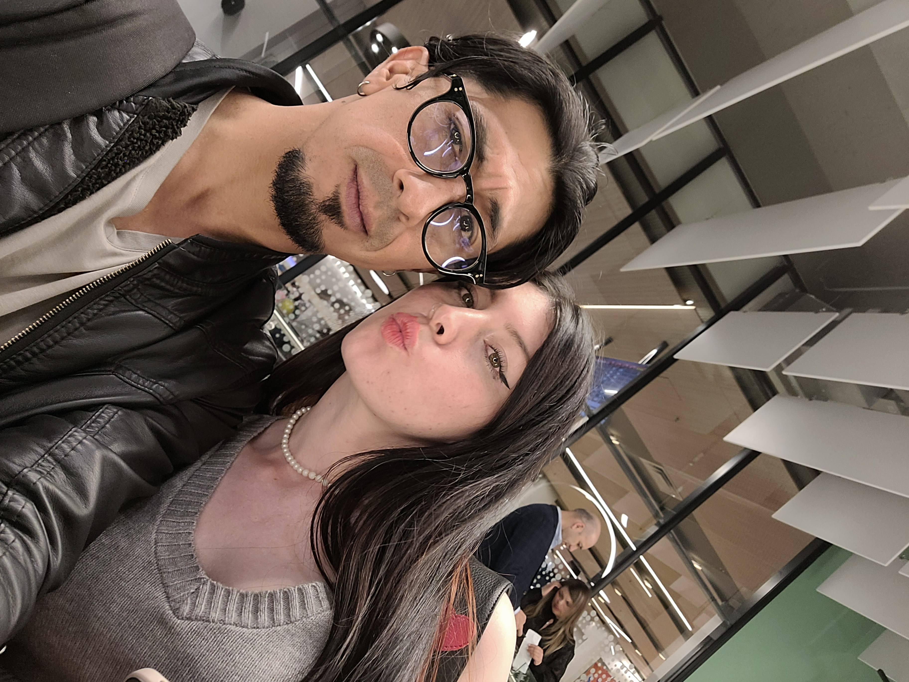
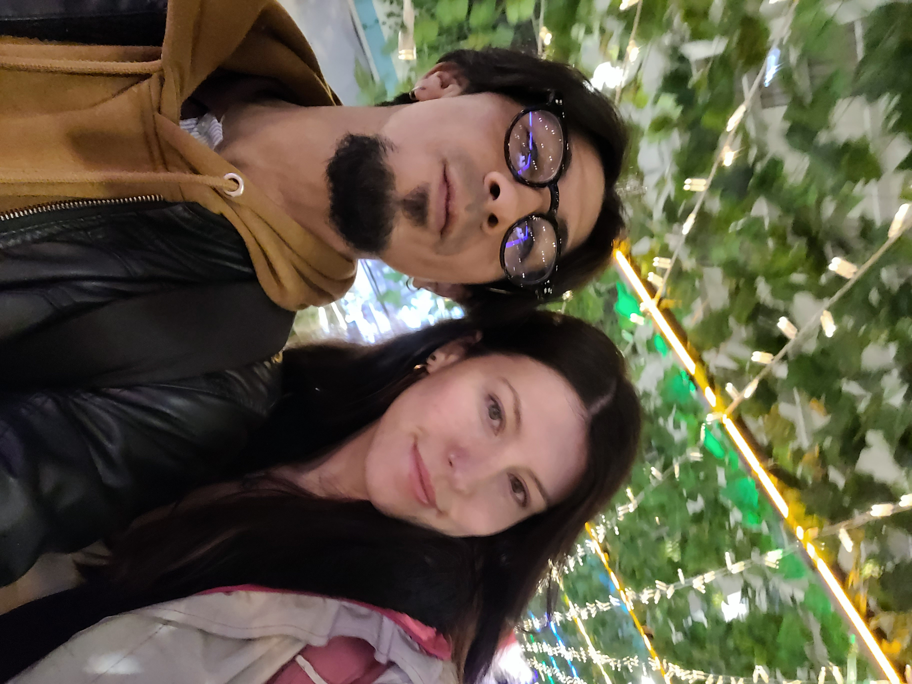
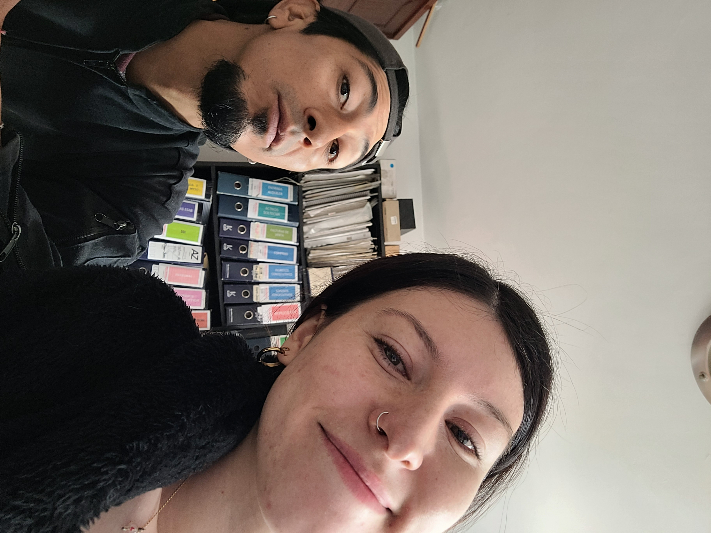
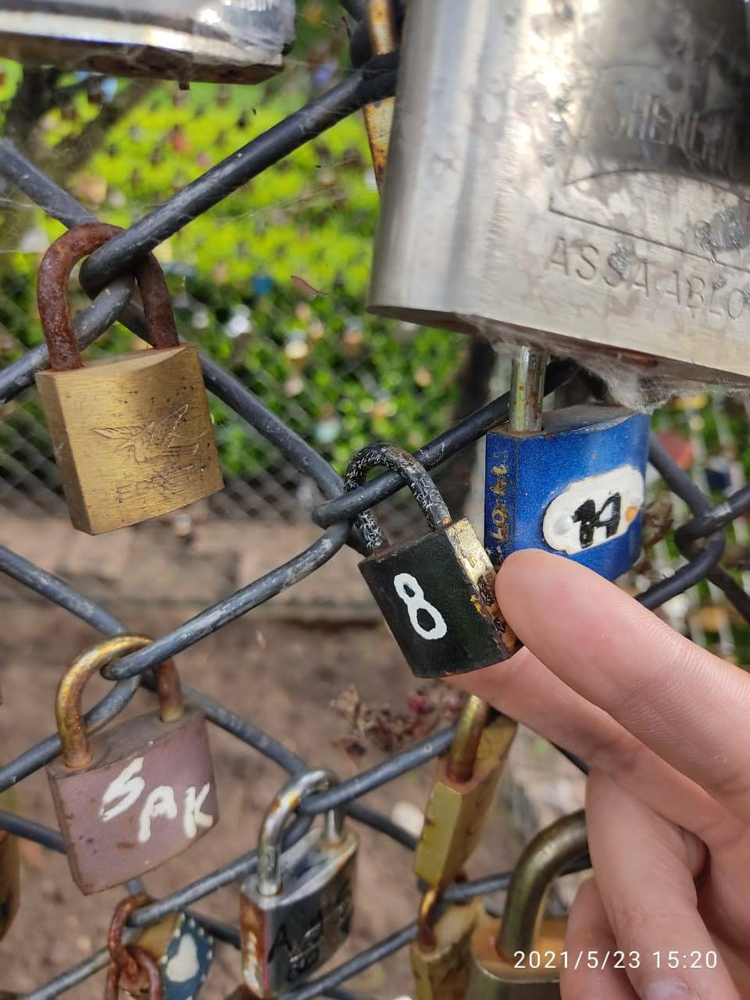
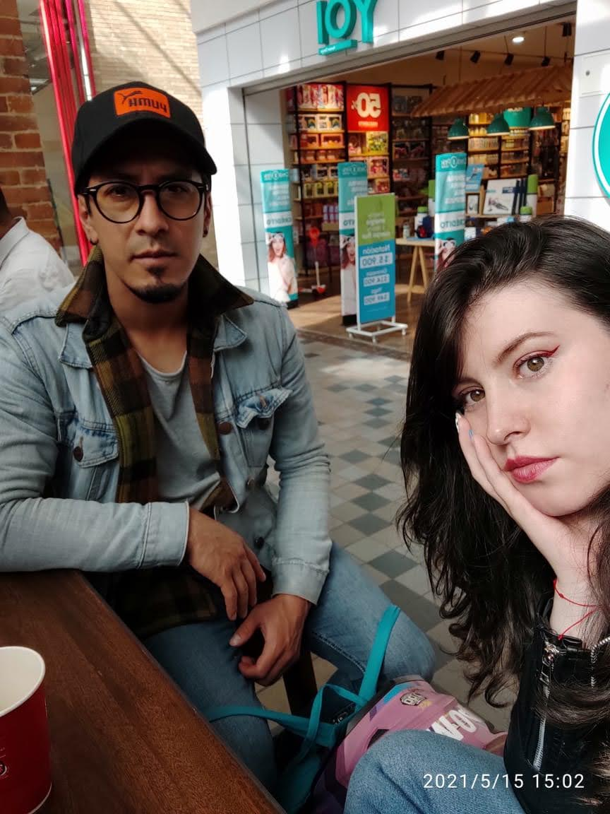
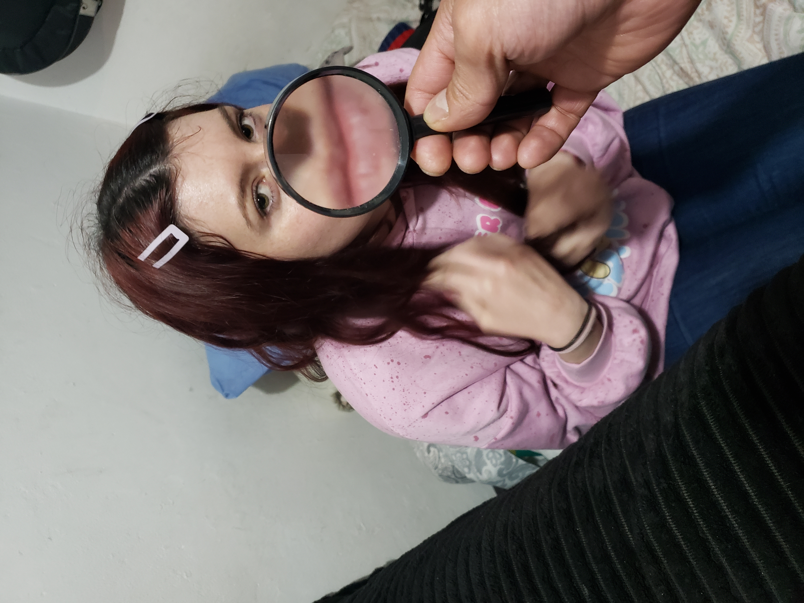

dedicado a
La Mamashita Juana
"Algunos momentos son tan perfectos que el tiempo decide quedarse quieto."
Revivir juntos ↓
dedicado a
"Algunos momentos son tan perfectos que el tiempo decide quedarse quieto."
Revivir juntos ↓
Me dices que te gusta guardar los momentos










Los instantes que me cambiaron
Estoy sentado frente al tablero, lo veo relleno con tinta de marcador y cubierto de figuras referentes a pasadas sociedades; estoy sentado escuchando al maestro que habla sobre algún conocimiento; nos dice preocupado que aquí en la academia este conocimiento no sirve de nada; que el verdadero conocimiento se encuentra allí afuera y regado por todas partes; disfrazado con múltiples formas, Que podríamos buscarlo afuera de esas cuatro paredes.
Saco la mirada de ese tablero por un instante y la fijo sobre el cuaderno que está nuevo y qué he dejado abierto sobre el pupitre; la blancura y el vacío de la hoja me asusta muchísimo, pero logro por un instante que en mi cabeza ya no retumbe la voz del profesor; ni de los molestos compañeros de salón; ni de las cuerdas de la guitarra que vibran y se amplifican abriéndose paso por la madera pasando mis huesos y calándose en tu corazón. Ahora, casi todo está en silencio; todo se va apagando por aquí; todo menos el sonido de las palabras que te dije y que me dijiste aquella tarde mientras pedaleábamos por la carrera séptima; unas palabras a las que se unen muchas otras antes dichas, que rosaron nuestros labios; palabras bien y mal dichas.
Estamos los dos de nuevo, rodando por la carretera; hace frio, es de noche, pero es muy clara con apenas media luna; luces de farolas de autos pasan de vez en cuando en sentido contrario al pueblito a donde nos dirigimos. Un destino que elegíamos varias veces por alguna razón. Tal vez el estar lejos nos permitía ser nosotros mismos, nosotros juntos. La carretera es muy larga y no veo el destino, aún no llegamos porque al parecer queda mucho camino aún: giro a la izquierda, otro a la derecha, nuevamente izquierda y derecha y derecha nuevamente. Metes las manos en los bolsillos de mi chaqueta para resguardarte del frio y ese simple contacto me calienta hasta el alma; las palabras que ahora salen rasgan mis labios y esta vez son palabras hermosas y bien dichas, me siento orgulloso de ellas porque las has entendido bien. El escenario cambia de nuevo y esta vez no estoy seguro de estar soñando. El sudor frío recorre mi cuerpo y me siento empapado, extrañamente feliz y triste; corro a buscar un bolígrafo y una hoja para que el sueño no se vaya del todo. Me recuerda al eterno retorno o la naturaleza cíclica de las cosas; una serpiente que se devora a sí misma desde la cola, la unidad de todaslas cosas, materiales y espirituales que no desaparecen nunca,sino que continúan en un ciclo perpetuo de creación y destrucción.
Porque algunas cosas no caben en una foto
Aloras dedicandonos un temón
Algo para alivianarnos de puro recuerdo
Para ti,
Para mi siempre amada Juanita; La historia de amor más hermosa de la creación no tiene conclusión, no hay final; porque no lo recuerdo. Sin embargo; el principio, bajo una torrencial lluvia de marzo en la que parecía que el cielo se desplomaba encima nuestro marcó lo que sería un tiempo hermoso. Las salidas y llegadas tarde a nuestras casas, las noches en las que nos perdíamos entre el tráfico a casi toda velocidad (de vez en cuando las cambiábamos porsabanas y amor delicioso entre nuestros sexos) estas noches maravillosas en las que recorría todo y absolutamente todo tu cuerpo. Recordarte también por su puesto es eso, tu hermosa piel blanca con constelaciones aún no descubiertas, tus labios, tus senos que llamaban a seguir lamiendo hasta que el néctar aparecía entre los dos. Aquella mañana en la que me dejaste verte desnuda, aquella madrugada con la intención de negarnos ese momento; aquella mañana que llevó una lucha que no te podré decir nunca. ¿En qué momento se quiso transformar en otras cosas? La historia de amor más hermosa de la creación no tiene conclusión, no hay final, porque no lo quiero recordar. Juntos de la mano, con un candado que al igual que este final,su llave no la recuerdo, y por eso, allí quedará por siempre sellado; agarrado con su bracito desesperado a la malla verde; nunca antes había entendido tanto el cómo se podría sentir aquel pequeño candado con dos mitades, como un eclipse, como tu y como yo: blanco y negro. Hoy soy ese candado y tu esa malla verde. ¿En qué momento se han perdido esas dos mitades que completaban uno solo? Ahora es tarde, esta mañana hicimos el amor por primera vez; ni la noche, ni tu ni yo queremos que se termine, no quieren dejarnos ir; mientras tanto en algún teléfono suena aquella canción “…Ella es de marte y yo de venus… primero amarte y luego vemos…” La historia de amor mas hermosa de la creación no está concluida, no hay final. ¿En qué momento se pierden las personas y las cosas? Lagrimas y sensaciones vacías entre las mitades, odios y perdones, culpas y descaros, palabras y poemas; ¿en qué momento se dejaron de emitir? Porqué pasa lo que pasa. El verdadero error es dejar perderse, pero la gran y verdadera tragedia es cuando esas mitades perfectas se aman, pero insisten tercamente en perderse. Juanita, nunca antes había amado tan fuerte y locamente; nunca antes le di tanto placer y tristeza a algún ser. No me dejes aquí tirado entre estas líneas; tienes el poder de transgredir y dejarme luchar por tus heridas; no me dejes tirado entre estas líneas, no ahora que se donde puedo amarte más fuerte. ¡Se le ama hermosamente! Por siempre tu sagrado polli. .
— Con todo mi amor,
Tu siempre "polli" Camilo